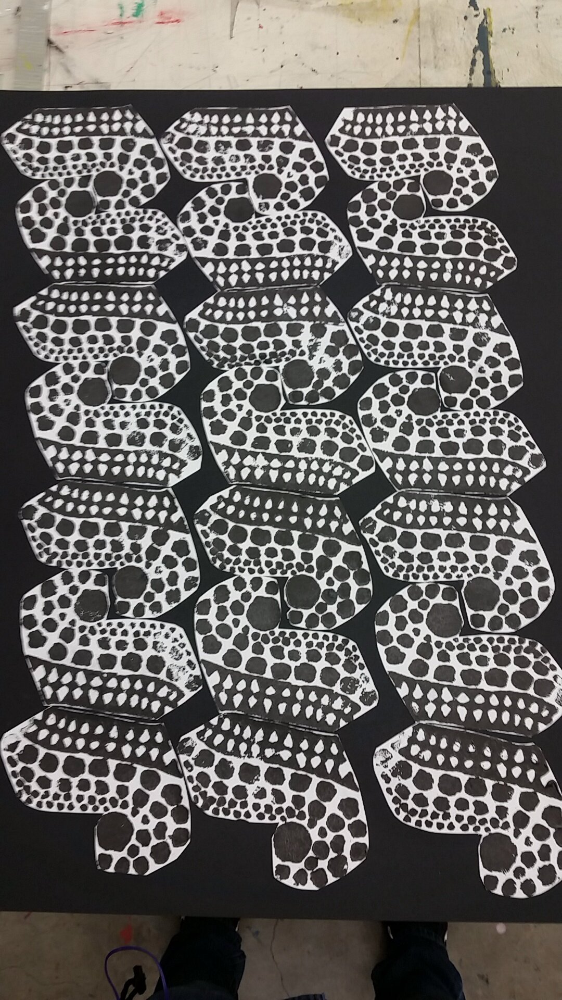
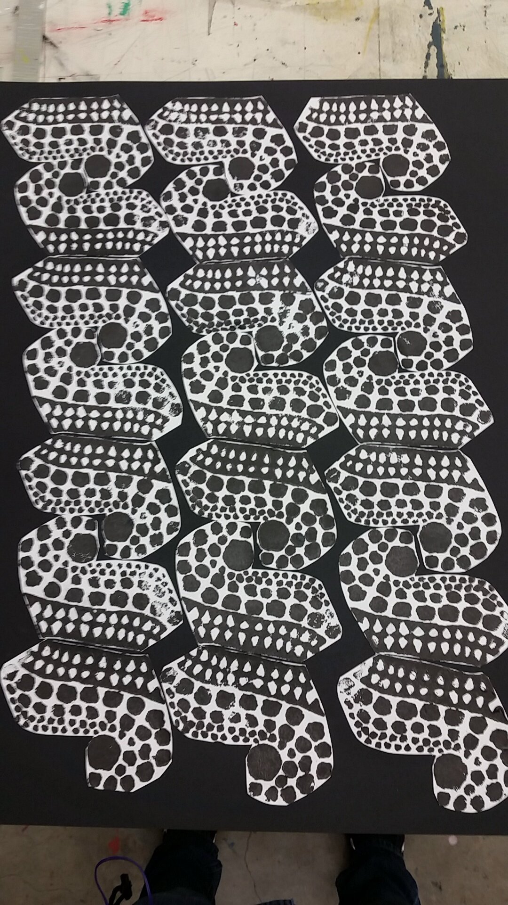
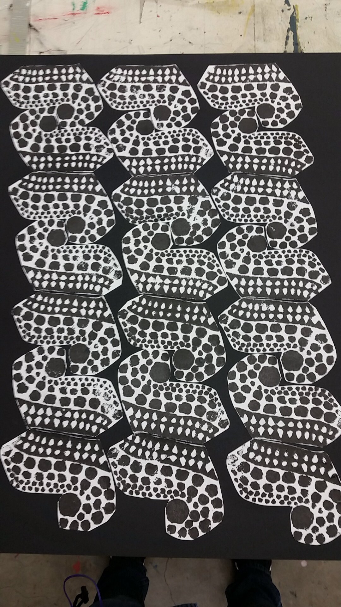

Here are some examples of some of my work from the past two years. I have mostly found myself focusing more, as well as delving more into photography. These are all local photographs. In addition, some of the other work is what I have had to do for other classes.
